This function takes a fitted mvgam object and produces plots of smooth functions, forecasts, trends and
uncertainty components
Usage
# S3 method for class 'mvgam'
plot(
x,
type = "residuals",
series = 1,
residuals = FALSE,
newdata,
data_test,
trend_effects = FALSE,
...
)Arguments
- x
listobject returned frommvgam. Seemvgam()- type
characterspecifying which type of plot to return. Options are: series, residuals, smooths, re (random effect smooths), pterms (parametric effects), forecast, trend, uncertainty, factors- series
integerspecifying which series in the set is to be plotted. This is ignored iftype == 're'- residuals
logical. IfTRUEandtype = 'smooths', posterior quantiles of partial residuals are added to plots of 1-D smooths as a series of ribbon rectangles. Partial residuals for a smooth term are the median Dunn-Smyth residuals that would be obtained by dropping the term concerned from the model, while leaving all other estimates fixed (i.e. the estimates for the term plus the original median Dunn-Smyth residuals). Note that becausemvgamworks with Dunn-Smyth residuals and not working residuals, which are used bymgcv, the magnitudes of partial residuals will be different to what you would expect fromplot.gam. Interpretation is similar though, as these partial residuals should be evenly scattered around the smooth function if the function is well estimated- newdata
Optional
dataframeorlistof test data containing at least 'series' and 'time' in addition to any other variables included in the linear predictor of the originalformula. This argument is optional when plotting out of sample forecast period observations (whentype = forecast) and required when plotting uncertainty components (type = uncertainty).- data_test
Deprecated. Still works in place of
newdatabut users are recommended to usenewdatainstead for more seamless integration intoRworkflows- trend_effects
logical. If
TRUEand atrend_formulawas used in model fitting, terms from the trend (i.e. process) model will be plotted- ...
Additional arguments for each individual plotting function.
Details
These plots are useful for getting an overview of the fitted model and its estimated
random effects or smooth functions,
but the individual plotting functions and the functions from the marginaleffects and gratia packages
offer far more more customisation.
Examples
# \donttest{
# Simulate some time series
dat <- sim_mvgam(T = 80, n_series = 3)
# Fit a basic model
mod <- mvgam(y ~ s(season, bs = 'cc') + s(series, bs = 're'),
data = dat$data_train,
trend_model = RW(),
chains = 2,
silent = 2)
#> In file included from stan/lib/stan_math/stan/math/prim/prob/von_mises_lccdf.hpp:5,
#> from stan/lib/stan_math/stan/math/prim/prob/von_mises_ccdf_log.hpp:4,
#> from stan/lib/stan_math/stan/math/prim/prob.hpp:359,
#> from stan/lib/stan_math/stan/math/prim.hpp:16,
#> from stan/lib/stan_math/stan/math/rev.hpp:16,
#> from stan/lib/stan_math/stan/math.hpp:19,
#> from stan/src/stan/model/model_header.hpp:4,
#> from C:/Users/uqnclar2/AppData/Local/Temp/RtmpotLup8/model-9e8c38222f99.hpp:2:
#> stan/lib/stan_math/stan/math/prim/prob/von_mises_cdf.hpp: In function 'stan::return_type_t<T_x, T_sigma, T_l> stan::math::von_mises_cdf(const T_x&, const T_mu&, const T_k&)':
#> stan/lib/stan_math/stan/math/prim/prob/von_mises_cdf.hpp:194: note: '-Wmisleading-indentation' is disabled from this point onwards, since column-tracking was disabled due to the size of the code/headers
#> 194 | if (cdf_n < 0.0)
#> |
#> stan/lib/stan_math/stan/math/prim/prob/von_mises_cdf.hpp:194: note: adding '-flarge-source-files' will allow for more column-tracking support, at the expense of compilation time and memory
# Plot predictions and residuals for each series
plot(mod, type = 'forecast', series = 1)
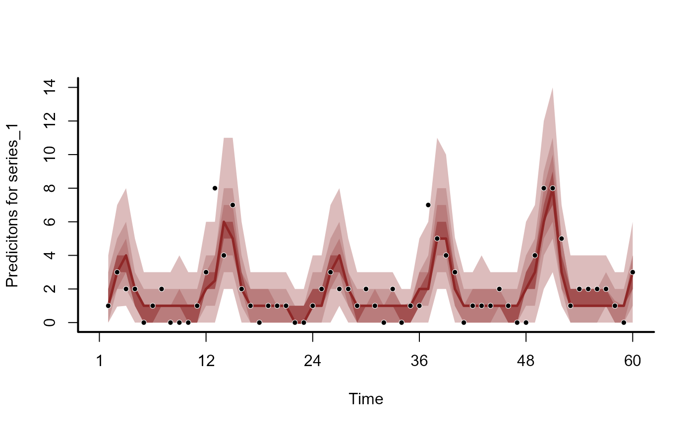
plot(mod, type = 'forecast', series = 2)
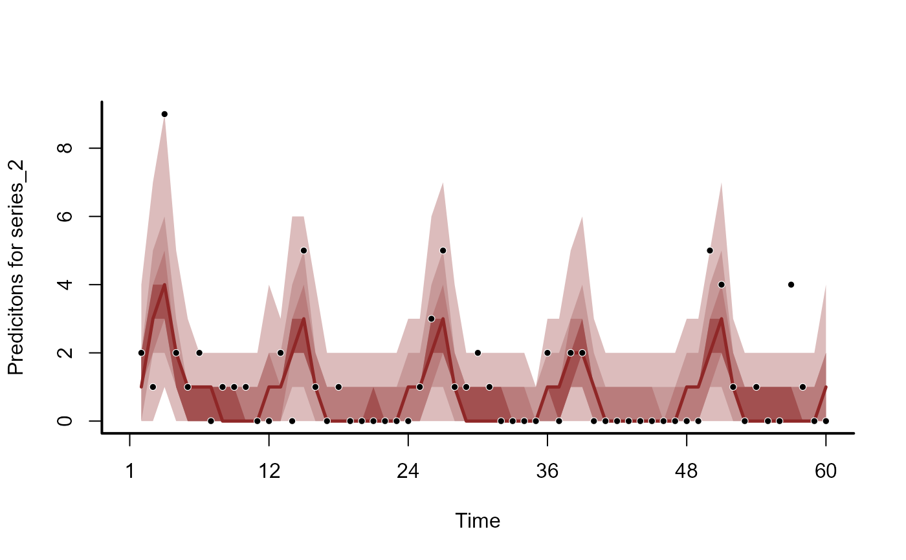
plot(mod, type = 'forecast', series = 3)
plot(mod, type = 'residuals', series = 1)
plot(mod, type = 'residuals', series = 2)
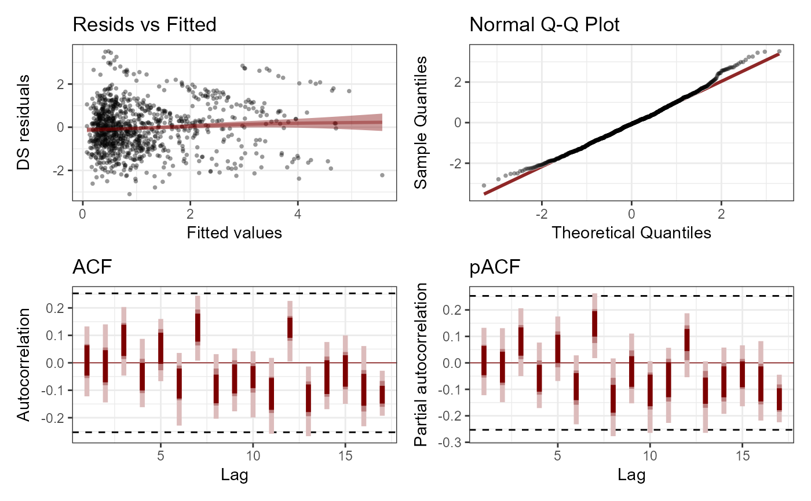
plot(mod, type = 'residuals', series = 3)
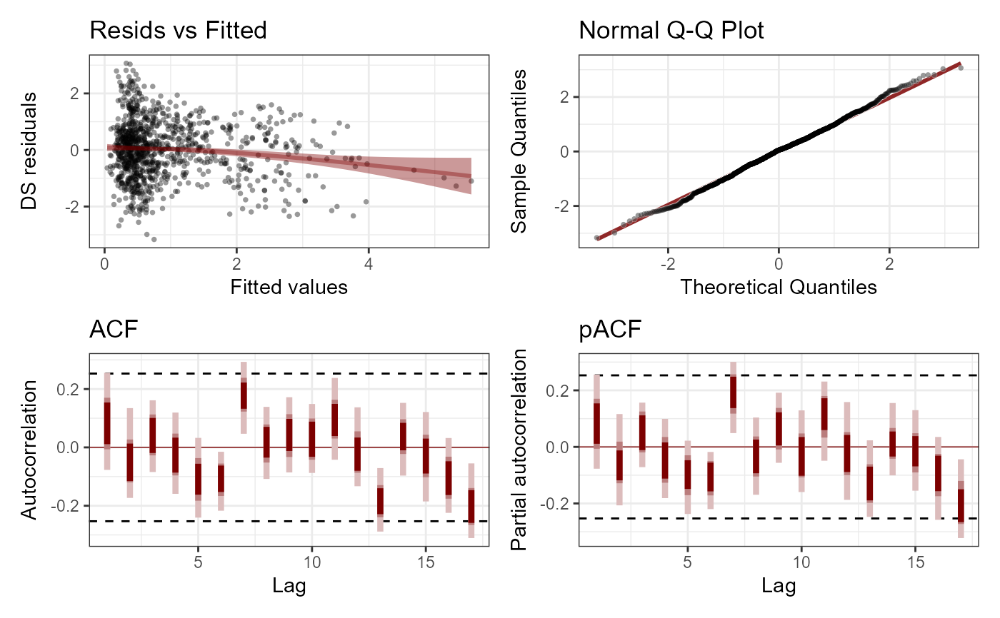
# Plot model effects
plot(mod, type = 'smooths')
plot(mod, type = 're')
 # More flexible plots with 'marginaleffects' utilities
library(marginaleffects)
plot_predictions(mod, condition = 'season', type = 'link')
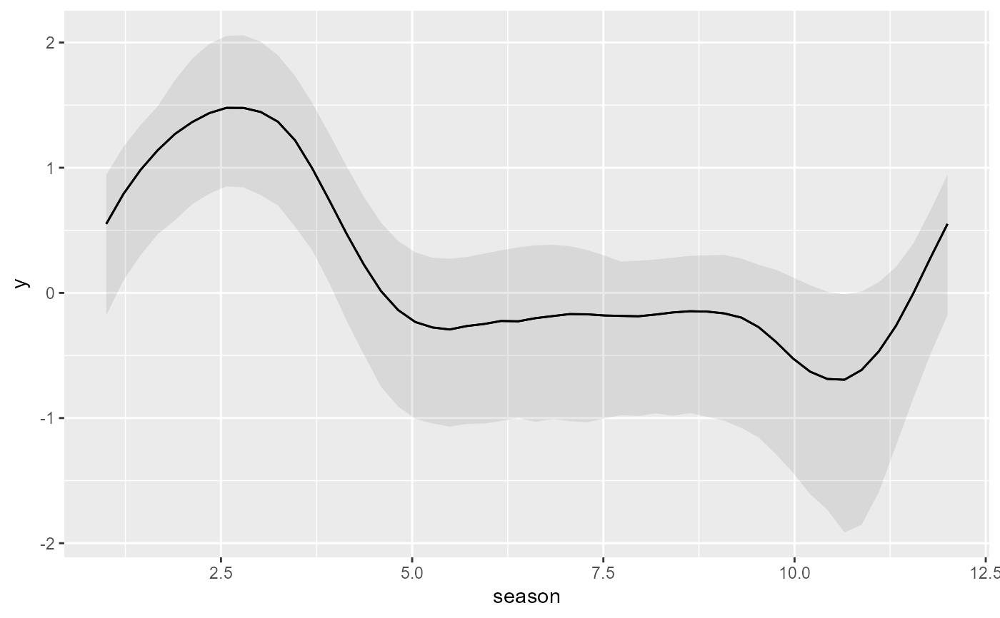
plot_predictions(mod,
condition = c('season', 'series', 'series'),
type = 'link')
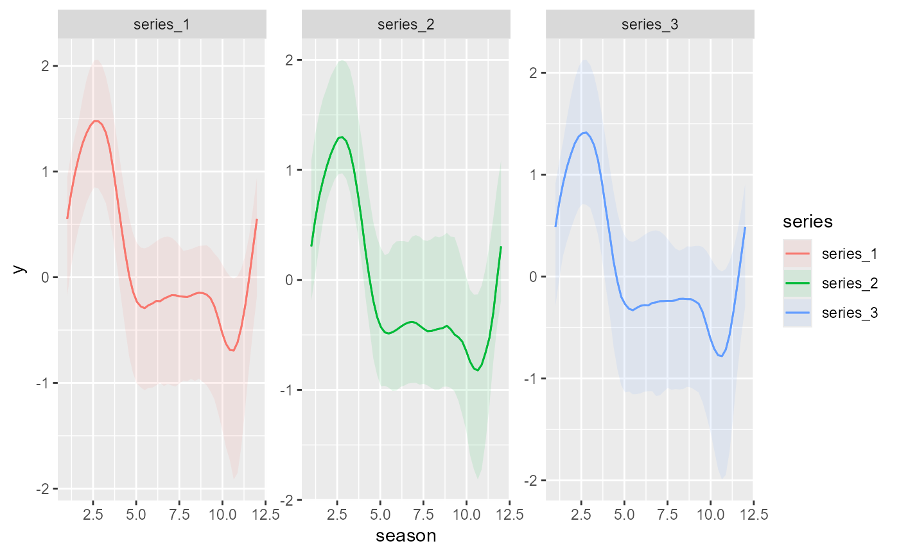
plot_predictions(mod, condition = 'series', type = 'link')
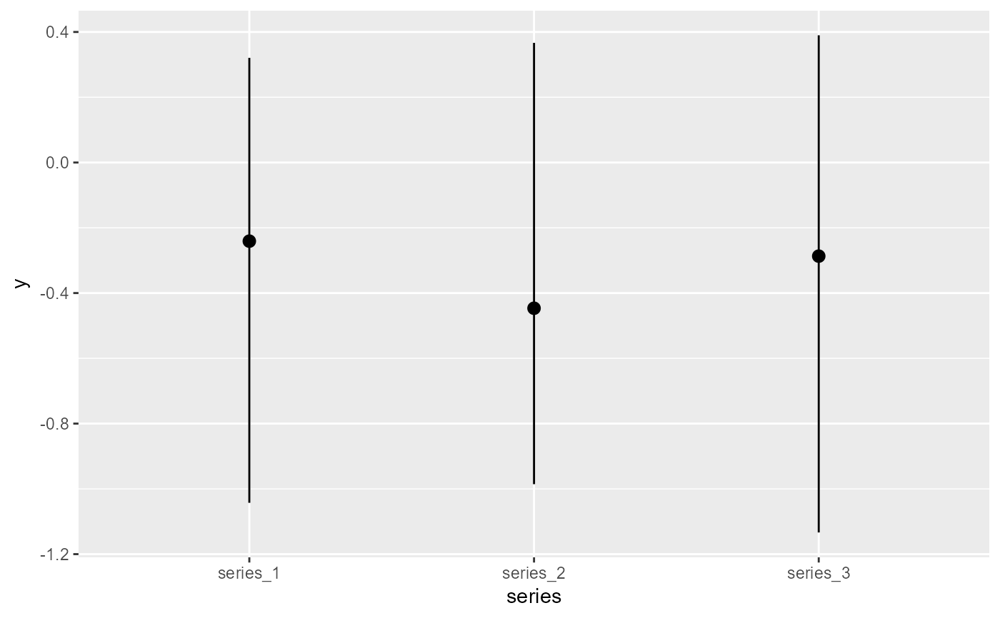
# When using a State-Space model with predictors on the process
# model, set trend_effects = TRUE to visualise process effects
mod <- mvgam(y ~ -1,
trend_formula = ~ s(season, bs = 'cc'),
data = dat$data_train,
trend_model = RW(),
chains = 2,
silent = 2)
#> In file included from stan/lib/stan_math/stan/math/prim/prob/von_mises_lccdf.hpp:5,
#> from stan/lib/stan_math/stan/math/prim/prob/von_mises_ccdf_log.hpp:4,
#> from stan/lib/stan_math/stan/math/prim/prob.hpp:359,
#> from stan/lib/stan_math/stan/math/prim.hpp:16,
#> from stan/lib/stan_math/stan/math/rev.hpp:16,
#> from stan/lib/stan_math/stan/math.hpp:19,
#> from stan/src/stan/model/model_header.hpp:4,
#> from C:/Users/uqnclar2/AppData/Local/Temp/RtmpotLup8/model-9e8c3b362b14.hpp:2:
#> stan/lib/stan_math/stan/math/prim/prob/von_mises_cdf.hpp: In function 'stan::return_type_t<T_x, T_sigma, T_l> stan::math::von_mises_cdf(const T_x&, const T_mu&, const T_k&)':
#> stan/lib/stan_math/stan/math/prim/prob/von_mises_cdf.hpp:194: note: '-Wmisleading-indentation' is disabled from this point onwards, since column-tracking was disabled due to the size of the code/headers
#> 194 | if (cdf_n < 0.0)
#> |
#> stan/lib/stan_math/stan/math/prim/prob/von_mises_cdf.hpp:194: note: adding '-flarge-source-files' will allow for more column-tracking support, at the expense of compilation time and memory
plot(mod, type = 'smooths', trend_effects = TRUE)
# But marginaleffects functions work without any modification
plot_predictions(mod, condition = 'season', type = 'link')
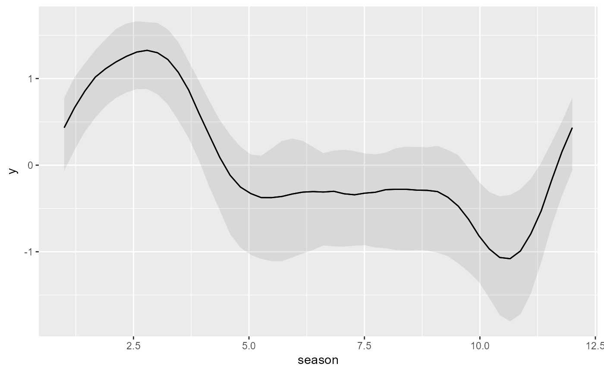
# }
# More flexible plots with 'marginaleffects' utilities
library(marginaleffects)
plot_predictions(mod, condition = 'season', type = 'link')
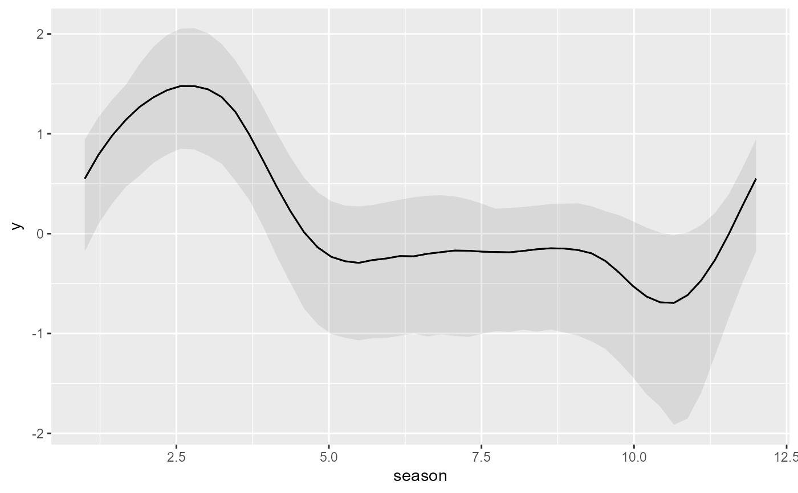
plot_predictions(mod,
condition = c('season', 'series', 'series'),
type = 'link')
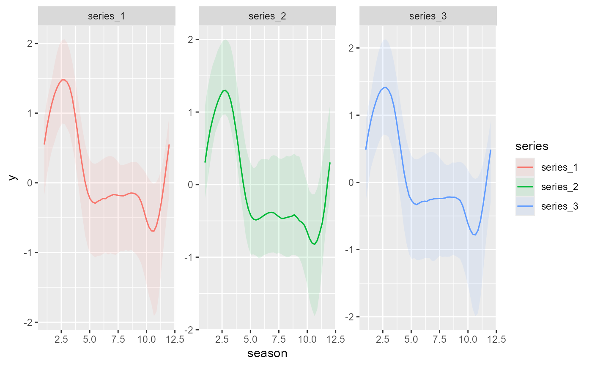
plot_predictions(mod, condition = 'series', type = 'link')
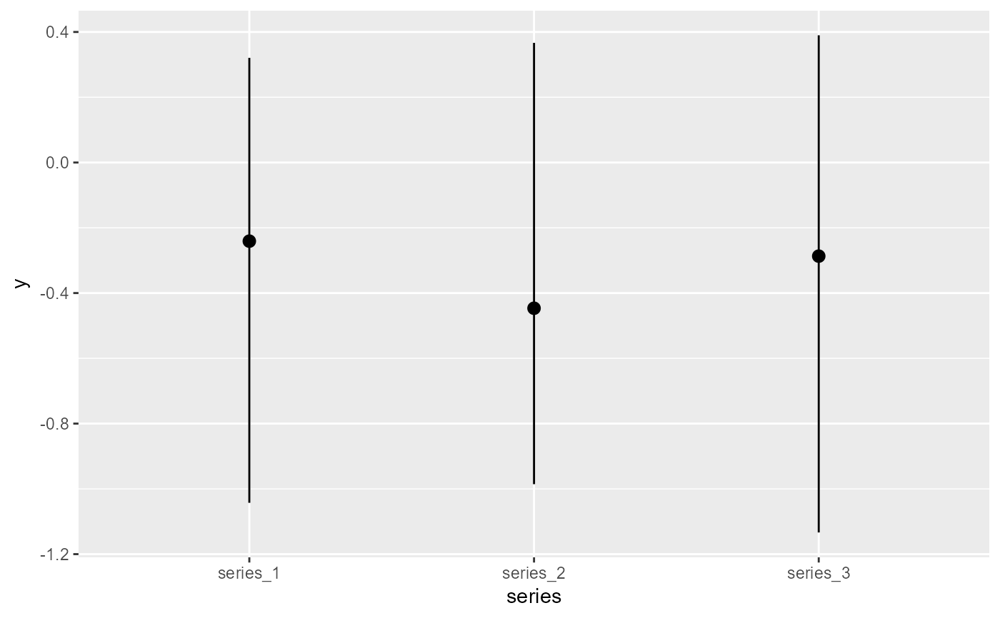
# When using a State-Space model with predictors on the process
# model, set trend_effects = TRUE to visualise process effects
mod <- mvgam(y ~ -1,
trend_formula = ~ s(season, bs = 'cc'),
data = dat$data_train,
trend_model = RW(),
chains = 2,
silent = 2)
#> In file included from stan/lib/stan_math/stan/math/prim/prob/von_mises_lccdf.hpp:5,
#> from stan/lib/stan_math/stan/math/prim/prob/von_mises_ccdf_log.hpp:4,
#> from stan/lib/stan_math/stan/math/prim/prob.hpp:359,
#> from stan/lib/stan_math/stan/math/prim.hpp:16,
#> from stan/lib/stan_math/stan/math/rev.hpp:16,
#> from stan/lib/stan_math/stan/math.hpp:19,
#> from stan/src/stan/model/model_header.hpp:4,
#> from C:/Users/uqnclar2/AppData/Local/Temp/RtmpotLup8/model-9e8c3b362b14.hpp:2:
#> stan/lib/stan_math/stan/math/prim/prob/von_mises_cdf.hpp: In function 'stan::return_type_t<T_x, T_sigma, T_l> stan::math::von_mises_cdf(const T_x&, const T_mu&, const T_k&)':
#> stan/lib/stan_math/stan/math/prim/prob/von_mises_cdf.hpp:194: note: '-Wmisleading-indentation' is disabled from this point onwards, since column-tracking was disabled due to the size of the code/headers
#> 194 | if (cdf_n < 0.0)
#> |
#> stan/lib/stan_math/stan/math/prim/prob/von_mises_cdf.hpp:194: note: adding '-flarge-source-files' will allow for more column-tracking support, at the expense of compilation time and memory
plot(mod, type = 'smooths', trend_effects = TRUE)
# But marginaleffects functions work without any modification
plot_predictions(mod, condition = 'season', type = 'link')
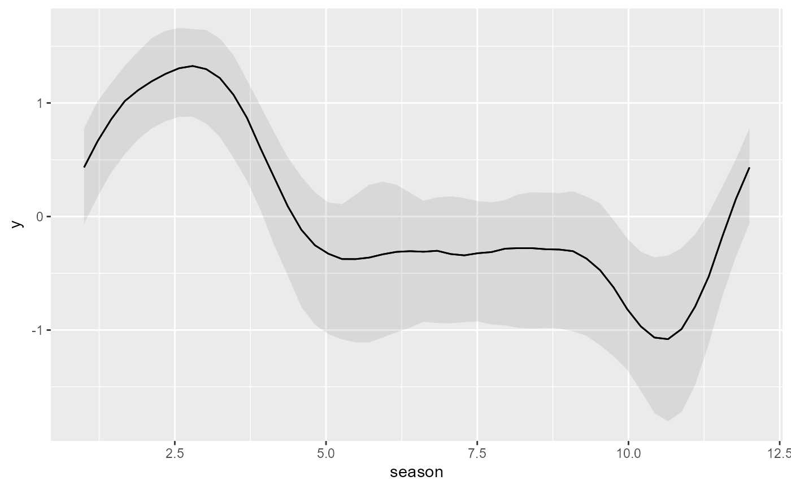
# }